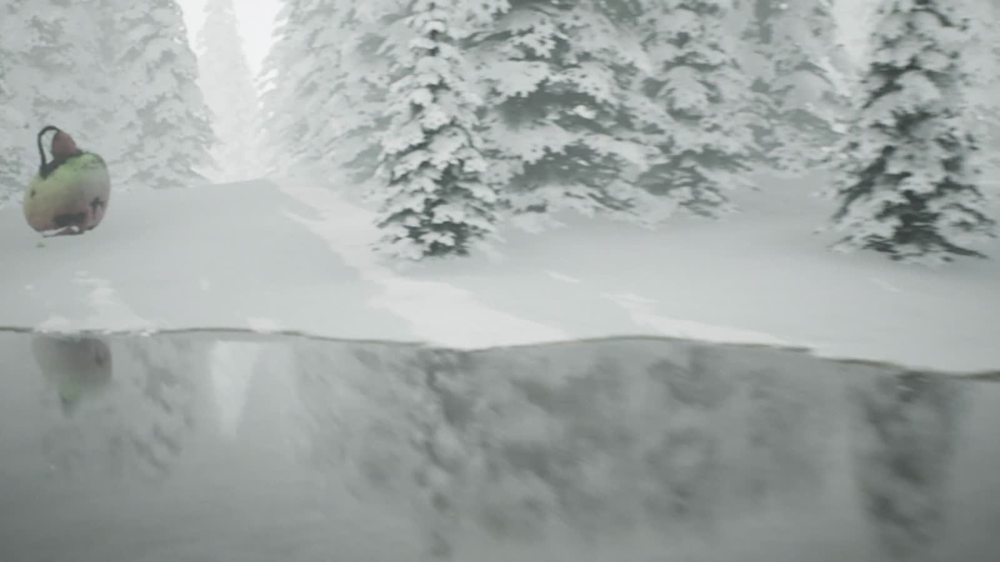

Something to Protect
守るべきものA woven iron egg guarded by a single perched bird.
RealizedFor three decades Ikeuchi has turned raw iron into monumental sculpture — first as a welder, now as one of Japan's most awarded outdoor sculptors. This catalogue presents six works available for acquisition or bespoke commission.
Profile
Ikeuchi trained as a welder in his family's ironworks on the island of Shikoku, twice placing in Kochi Prefecture's welding competitions before he ever exhibited as an artist. In his late forties he redirected that trade toward sculpture, exhibiting every year since 2009.
Every work in this catalogue is still hand-forged in his own workshop in Kochi — nothing outsourced, nothing cast from the same mould twice.
Concept to Reality
Every commission begins as a cinematic previsualization. The following three left that stage months ago — they are shown here as they stand today, in weather, at full scale.

A woven iron egg watched over by a single bird, installed at the head of a shrine's stone stairway in Kochi.
▶ Watch the film

A weathered mask on wire limbs, set at the tideline of the Shikoku coast, reworked by every wave.
▶ Watch the film

Iron stems grown into a bamboo garden rather than placed against it, ageing the way the garden ages.
▶ Watch the filmThe Catalogue
Realized works can be replicated for your site. Bespoke concepts are previsualized and ready to be scaled and forged.
A woven iron egg guarded by a single perched bird.
RealizedA weathered mask on wire limbs, built for the tideline.
RealizedIron stems grown to stand among real bamboo.
RealizedA folded flame of hammered steel for a double-height space.
BespokeA cracked, weathered egg opened onto a warm interior.
BespokeA wire-legged vessel cradling a hammered leaf.
BespokeWorks in Iron
Photographs of finished works as they were exhibited and installed. Select any image to view it full size.
A wide rusted-iron bloom holding a single stone, carried on one wandering stem — with a pierced iron butterfly settling at its edge.
Hundreds of lengths of rebar twisted into a single trunk, opening into a crown above and roots below — wrapped in a band of orange steel.
Coloured steel blades rising from a black steel core beside the museum's stone marker, reading clearly against the surrounding forest.
Functional Iron
The same hand-forged iron, made to be used every day. Each piece is built to order and can be sized and coloured for your space.
A natural log trunk sprouting coloured steel leaves that double as hooks. At home in a nursery entrance or a design-office reception.
A long, gently curving bench of cedar slats on many slender iron legs — a creature resting in the garden, with an iron head to match.
A slim cedar-clad store on a steel frame, with a forged iron flower in the window and a red lever handle.
Images marked “Placement image” show how a piece could look in a setting; they are not records of a delivered installation.
Placements
The first object a resident's eyes meet — permanence, stated before the brochure is read.
A single object in a room built for conversation, placed so guests are meant to ask what it is.
Weatherproof enough for the entrance, refined enough to anchor a lobby or bath-house approach.
Grown alongside planting rather than placed against it, ageing the way the garden ages.
Process
We review the site — light, sightlines, scale, and what it should say.
The piece is placed in a cinematic render of its future setting for approval.
Hand-built in Ikeuchi's Kochi workshop, using technique practiced since youth.
Delivered, installed, and weather-tested, with an ongoing maintenance plan.
Recognition
Contact
Send the location, the space, and what you have in mind. We reply with a previsualization concept before any commitment is required.